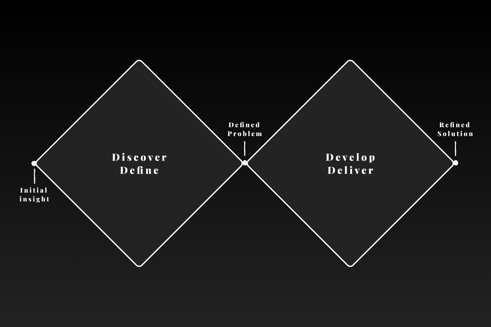
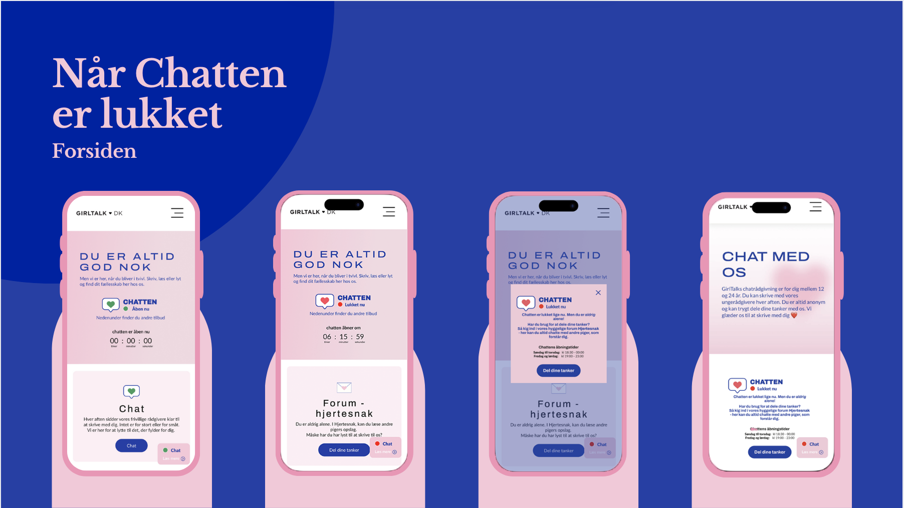

GirlTalk's purpose is to prevent mental distress among girls and young women and to strengthen their self-confidence. The organization aims to be there for those who need someone to talk to, with a strong focus on providing support exclusively for girls. Its values reinforce this mission, emphasizing the belief that everyone needs someone to talk to, that every individual is valuable regardless of background, and the principle of sisterhood. GirlTalk seeks to create a safe space where girls can share both big and small concerns, on their own terms and in their own time.
Mental distress among girls aged 12–16 is a growing issue, and many are seeking a safe space to get help. How can GirlTalk’s digital counseling be adapted to better support the needs and digital behavior of this target group?
The development process followed the Double Diamond model, which structures the design work into four interconnected phases.
In the Discover phase, an open and exploratory approach was used to gain insight into the users’ needs and the broader problem. This included desk research, interviews, and a survey.
In the Define phase, the collected insights were analyzed and narrowed down to clearly identify the core challenge.
During the Develop phase, ideas and potential solutions were generated and tested. The first prototype was created using Figma and tested with the target group.
Finally, in the Deliver phase, the best solution was refined and further developed into a second prototype, also created in Figma.
Hjertesnak (The HeartTalk) is a digital forum hosted on GirlTalk’s website, designed to support girls outside the opening hours of the chat counseling service. The concept addresses a key gap in the user journey: when young girls seek help, their needs may not be met if the chat is closed. Hjertesnak offers an alternative space where the journey toward support doesn’t have to pause.
The forum allows girls to share their thoughts, seek advice, and connect with others in similar situations. Users can react to and respond to posts and comments, offer support, share challenges, and provide guidance. This interaction helps foster a sense of community, making users feel less alone. Hjertesnak extends the availability of support beyond chat hours and serves as a valuable complement to GirlTalk’s counseling services.
The forum is designed with safety and anonymity in mind. Users can participate anonymously by creating a nickname, which ensures conversations remain clear and respectful. The space is actively moderated by GirlTalk’s team to maintain a supportive tone and safe environment. Moderators can respond to posts—similar to a Q&A format—and their replies are highlighted, allowing users to react to and comment on them as well.
By offering a continuous, community-based form of support, Hjertesnak enhances the user journey. It promotes a sense of continuity, trust, and belonging, while reinforcing GirlTalk’s commitment to creating informal, safe spaces that prioritize anonymity and emotional support.

Frontpage - When chat is closed
The Hearttalk Forum - Frontpage
The Hearttalk - Login/ Create account or post
The Hearttalk - How a post looks